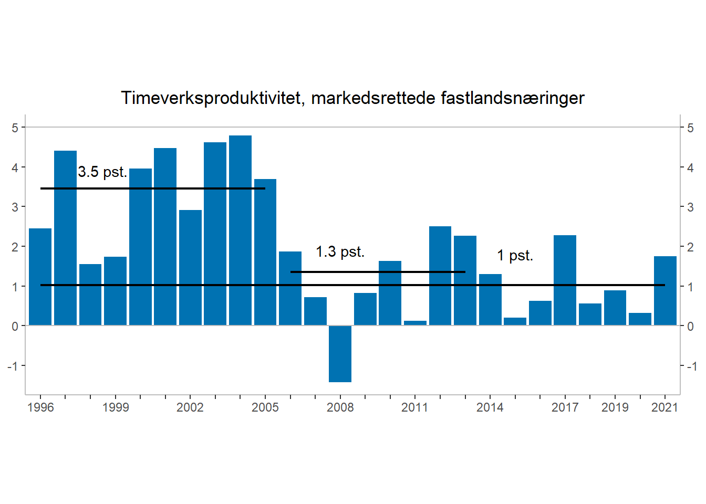

Code
rm(list=ls())
library(tidyverse)
library(rjstat)
library(httr)Denne oppgaven skal løses interaktivt i RStudio ved å legge inn egen kode og kommentarer. Det ferdige dokumentet lagres med kandidatnummeret som navn [kandidatnummer]_SOK1004_C5_H22.qmd og lastes opp på deres GitHub-side. Hvis du har kandidatnummer 43, så vil filen hete 43_SOK1004_C5_H22.qmd. Påse at koden kjører og at dere kan eksportere besvarelsen til pdf. Lever så lenken til GitHub-repositoriumet i Canvas.
I seminar 3, oppgave 3 leste dere kapittel 1 i NOU 2015:1 “Produktivitet - grunnlag for vekst og velferd.” I denne oppgaven skal vi oppdatere tall brukt i analysen. Gjennom arbeidet vil dere repetere de grunnleggende ferdighetene i bruk av API, tidyverse og ggplot som vi har arbeidet med gjennom kurset. Dere vil også få anledning til å reflektere rundt sammenhengene i nasjonalregnskapet og å grave litt i statistikkbanken hos SSB.
rm(list=ls())
library(tidyverse)
library(rjstat)
library(httr)Reproduser en oppdatert versjon av Figur 1.1 “Timeverksproduktivitet, markedsrettede fastlandsnæringer” i rapporten. Her er produktivitet målt som bruttoprodukt i markedsrettet produksjon i Fastlands-Norge per timeverk, utenom bolig.
Hvorfor trekker Produktivitetskommisjon fra produksjonen av boligtjenester, offentlig etterspørsel, og inntekter fra olje og gass når de beregner produktivitet?
Fordi i disse tre tilfellene er ikke forutsetningene for produktivitetsberegning i stor nok grad oppfylt.
Inntekter fra olje og gass fratrekkes fordi produktivitetsveksten i norsk økonomi påvirkes betydelig når den er inkludert eller ikke. Når Norge skal sammenligne seg selv mot andre land er det hensiktsmessig å ekskludere olje og gass for å få et reelt bilde på vårs faktiske makroøkonomiske størrelse.
Boligtjenester blir ekskludert fordi de fleste av boliger er selveide, når de ikke har noen omsetning kan ikke produksjonen måles.
Produktivitetskommisjonen trekker fra offentlig etterspørsel fordi det er mangelfulle mål på produksjon som omsettes. Dette fordi det er vanskelig å bryte ned produksjonsverdien på tjenester, siden de ikke er standardiserte slik som varer.
Skriv kode som bruker en JSON-spørring til å lage en oppdatert versjon av figuren, med observasjoner fra 1996 til 2021. Beregn gjennomsnittlig årlig endring for perioden 1996 - 2005 og, 2005-2013, og 2006 - 2021. Står konklusjonen i rapporten seg?
Merknad. Det er tidvis store revisjoner i nasjonalregnskapet. Du må regne med at individuelle tall på årlig endring kan avvike en god del, opp til et halvt prosentpoeng, mens de gjennomsnittlige veksttallene burde avvike noe mindre.
Tips: Du henter data på timeverk og bruttoprodukt fra henholdsvis tabell 09174 og 09170.
Henter Utførte timeverk for lønnstakere og selvstendig næringsdrivende (mill. timeverk) fra årene 1995-2021 for Markedsrettet virksomhet Fastlands-Norge. Å bruke datasettet med selvstendig næringsdrivende inkludert vil gi større avvik fra NOU-rapporten men det vil bli mer korrekt i henhold til oppgaven.
url <- "https://data.ssb.no/api/v0/no/table/09174/"
query <- '{
"query": [
{
"code": "NACE",
"selection": {
"filter": "vs:NRNaeringPubAgg",
"values": [
"nr23mark"
]
}
},
{
"code": "ContentsCode",
"selection": {
"filter": "item",
"values": [
"Timeverk"
]
}
},
{
"code": "Tid",
"selection": {
"filter": "item",
"values": [
"1995",
"1996",
"1997",
"1998",
"1999",
"2000",
"2001",
"2002",
"2003",
"2004",
"2005",
"2006",
"2007",
"2008",
"2009",
"2010",
"2011",
"2012",
"2013",
"2014",
"2015",
"2016",
"2017",
"2018",
"2019",
"2020",
"2021"
]
}
}
],
"response": {
"format": "json-stat2"
}
}'
hent_indeks.tmp <- url %>%
POST(body = query, encode = "json")
df <- hent_indeks.tmp %>%
content("text") %>%
fromJSONstat() %>%
as_tibble()Her henter jeg ut Bruttoprodukt i basisverdi. Faste 2015-priser (mill. kr) på årene 1995-2021 og Markedsrettet virksomhet Fastlands-Norge og Boligtjenester.
url2 <- "https://data.ssb.no/api/v0/no/table/09170/"
query2 <- '{
"query": [
{
"code": "NACE",
"selection": {
"filter": "vs:NRNaeringPubAgg",
"values": [
"pub2X68B",
"nr23fn"
]
}
},
{
"code": "ContentsCode",
"selection": {
"filter": "item",
"values": [
"BNPB2"
]
}
},
{
"code": "Tid",
"selection": {
"filter": "item",
"values": [
"1995",
"1996",
"1997",
"1998",
"1999",
"2000",
"2001",
"2002",
"2003",
"2004",
"2005",
"2006",
"2007",
"2008",
"2009",
"2010",
"2011",
"2012",
"2013",
"2014",
"2015",
"2016",
"2017",
"2018",
"2019",
"2020",
"2021"
]
}
}
],
"response": {
"format": "json-stat2"
}
}'
hent_indekx.tmp <- url2 %>%
POST(body = query2, encode = "json")
df2 <- hent_indekx.tmp %>%
content("text") %>%
fromJSONstat() %>%
as_tibble()# Legger bolig, og markedsproduksjon i to forskjellige kolonner
df2 <- df2 %>%
pivot_wider(names_from = næring, values_from = value) %>%
# Endrer noen navn i df2
rename(Marked=`¬ Markedsrettet virksomhet Fastlands-Norge`) %>%
rename(Bolig=`Boligtjenester, egen bolig`) %>%
# Trekker fra boligtjenester fra markedsrettet virksomhet
mutate(Markedubolig = Marked-Bolig)# Skifter navn på value til Timeverk i df
df <- df %>%
rename(Timeverk = value)
# Legger til markedsrettet virksomhet i dataframen som man skal jobbe med videre
df <- df %>%
cbind(Bruttoprodukt = df2$Markedubolig) %>%
# Lager en lag variabel av timeverk for å regne prosent
mutate(TimeverkL = lag(Timeverk,n=1L)) %>%
# Lager en lag variabel av bruttoprodukt for å regne prosent
mutate(BruttoproduktL = lag(Bruttoprodukt,n=1L)) %>%
# Regner ut prosentene for timeverksproduksjon og bruttoproduktet
mutate(pros_timeverk = 100*(Timeverk-TimeverkL)/(Timeverk)) %>%
mutate(pros_bruttoprodukt = 100*(Bruttoprodukt-BruttoproduktL)/(Bruttoprodukt)) %>%
# Trekker fra timeverksprosenten til bruttoproduktprosenten for å finne
# de relative prosentverdiene
mutate(final = pros_bruttoprodukt-pros_timeverk)avg96_05 <- df %>%
filter(år == 1995:2005) %>%
filter(år >=1996) %>%
mutate(total = sum(final)) %>%
mutate(gjennomsnitt = total/10)
# Printer disse ut for å plotte de inn på figuren over årene gjenomsnittet er regnet ut
print(paste("Gjennomsnittet for 1995-2005 er", avg96_05[1,12]))[1] "Gjennomsnittet for 1995-2005 er 3.46151273761439"# Nytt datasett med gjennomsnittsverdier for 2005-2013
avg05_13 <- df %>%
filter(år == 1995:2013) %>%
filter(år >=2005) %>%
mutate(total = sum(final)) %>%
mutate(gjennomsnitt = total/9)
print(paste("Gjenomsnittet for 1995-2013 er", avg05_13[1,12]))[1] "Gjenomsnittet for 1995-2013 er 1.35612217084462"# Siste datasett med gjennomsnittsverdier for 2006-2021
avg06_21 <- df %>%
filter(år == 1995:2021) %>%
filter(år >=2006) %>%
mutate(total = sum(final)) %>%
mutate(gjennomsnitt = total/16)
print(paste("Gjenomsnittet for 1995-2021 er",avg06_21[1,12]))[1] "Gjenomsnittet for 1995-2021 er 1.02505629910663"# Starter med å filtrere fra år 1996 siden 1995 ikke skal være med eller
# har verdier
df %>%
filter(år >= 1996) %>%
# Starter plottet
ggplot(aes(x=år, y=final)) +
geom_col(fill = "#0072B2") +
# Legger til prosentverdiene til de horisontale linjene
annotate("text", x=3.5, y=3.9, label= "3.5 pst.") +
annotate("text", x=13, y=1.9, label= "1.3 pst.") +
annotate("text", x=20, y=1.8, label= "1 pst.") +
# Legger til y verdier, fjerner y og x undertitler, gjør bakgrunnen hvit,
# midtstiller tittelen, dupliserer y-verdiene så de går på begge
# sider av figur og gjør figuren litt bredere
scale_y_continuous(sec.axis=dup_axis(),breaks = c(-2, -1, 0, 1, 2, 3, 4, 5)) +
theme(aspect.ratio=3/7,
axis.title.y=element_blank(),
axis.title.x=element_blank(),
plot.title=element_text(hjust = 0.5),
panel.background = element_blank(),
axis.line = element_line(colour = "grey"))+
# Plotter inn gjennomsnittsverdiene rundet av som horisontale linjer over
# årene som ble printet ut i koden over
geom_segment(aes(x=1,xend=10,y=avg96_05[1,12],yend=avg96_05[1,12]),
linewidth=0.8) +
geom_segment(aes(x=11,xend=18,y=avg05_13[1,12],yend=avg05_13[1,12]),
linewidth=0.8) +
geom_segment(aes(x=1,xend=26,y=avg06_21[1,12],yend=avg06_21[1,12]),
linewidth=0.8) +
# Lager linje for 0 punktet horisontalt og en for punkt 5 for å få den som en boks
geom_hline(yintercept=0, linewidth=0.5, colour= "grey") +
geom_hline(yintercept=5, linewidth=0.5, colour= "grey") +
# Lager tittel
labs(title="Timeverksproduktivitet, markedsrettede fastlandsnæringer") +
# Gjør slik at årstallene ikke overlapper hverandre
scale_x_discrete(guide = guide_axis(check.overlap = TRUE))
Figuren blir å avvike noe, samme med gjennomsnittet i årene siden det virker som produktivitetskommisjonen ikke har utregnet arbeidsproduktivitet med selvstendig næringsdrivende i markedsrettet virksomhet fastlands-norge
Tolker man figuren så har arbeidsproduktiviteten fortsatt videre med en gjennomsnitlig økning på 1 prosent fra 2006 til 2021. Utregningen her avviker noe og viser at 2005-2013 har en gjennomsnitlig økning på 1.34 prosent mot 0.8 prosent i deres figur. Dette vil si at produktivitetsveksten er i en synkende trend og at det rapporten konkluderer med i 2015 stemmer hvor den sier at de gunstige tiårene vi har hatt fra 1996-2005 ikke trenger å bety at Norge fremover skal forvente like høy vekst i produktivitet.